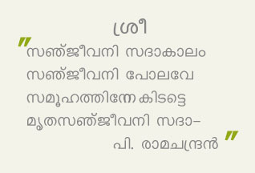

Many important personalities have visited the Balikasadanam at different times and recorded their satisfactory notes after seeing the facilities provided to the inmates and interacting with them. The visit of the following dignitaries are noteworthy

- Swami Mridananda , Ramakrishna Ashram, Puranattukara
- Swami Sakrananda , Ramakrishna Ashram, Puranattukara
- Swami Gabheerananda of Chinmaya Mission
- Swamini Namitha Chaithanya -do-
- Garudadhwajananda Theerthapadar of Vazhoor Theerthapada ashram
- Brahmachari Vivekamritha Chaithanya of Amrithanandamayi Madom
- Film Director Kamal
- Cine Actor Biju Menon & Actress Samyuktha Varma
- Caricature Artist Jayaraj Warrier
- Music Director Vidhyadharan Master
- Play Back Singer Arundathi
- Guru Gopalakrishnan (Dancer) & Kusumam Gopalakrishnan
- Poojaneeya Sarsanghachalak Sudarsanji
- Former Akhila Bharatheeya Boudhik Pramukh Mananeeya R.Hari
- Akhila Bharatheeya Boudhik Pramukh Madhubhai Kulkarni
- Saha Sarkaryavah Mananeeya Suresh Joshi
- Former Akhila Bharatheeya Seva Pramukh Soorya Narayana Raoji
- Bharatheeya Vicharakendram Director P.Parameswarji
- Balagokulam Margadarshi M.A.Krishnan(MA Sir)
- Tarun Vijay Editor Panchajanya